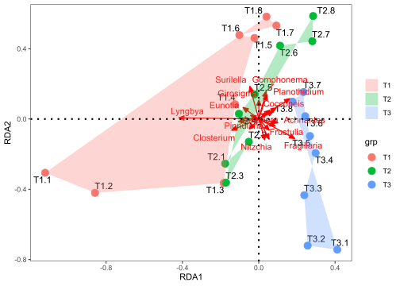
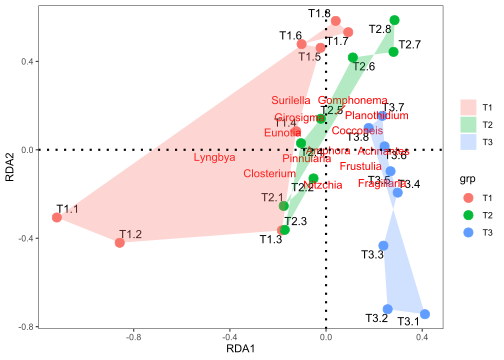
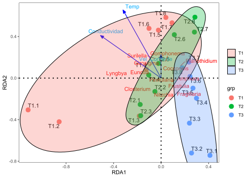

# Librerías requeridas
library(ade4)
library(adegraphics)
library(adespatial)
library(cocorresp)
library(vegan)
library(MASS)
library(ellipse)
library(FactoMineR)
library(rrcov)
library(ggplot2)
library(reshape2)
library(ggrepel)
library(ggforce)Taller 7.1 Análisis de Redundancia - RDA
Datos de densidades de Microalgas en un río de montaña
Análisis de Redundancia - RDA - base Microalgas
Objetivo de la actividad:
La siguiente base de datos es tomada del trabajo de (Osorio, 2021), relacionado a un estudio sobre la composición de microalgas de la ciénaga Sevillano en el complejo lagunar de la Ciénaga Grande de Santa Marta (Colombia). La información contiene a 21 géneros de microalgas (matriz Y) y 10 variables ambientales (matriz X) medidas en 24 observaciones (localidades y campañas de muestreo). El propósito del ejercicio consiste en determinar la relación entre la composición de las microalgas y las variables fisicoquímicas de su ambiente, aplicando un análisis de redundancia (RDA) y un Análisis de Correspondencia Canónica (ACC), para finalmente comparar la aplicación de cada técnica. Se utilizará el siguiente archivo: Microalgas.csv
Ejercicio tomado de: Rodríguez-Barrios (2023) Enlace del libro
Enlace de los archivos del libro Revisar el capitulo de Análisis de Redundancia - RDA
Numerical Ecology With R - Borcard et al. 2018 Capítulo de Análisis de Redundancia - RDA
Procedimiento resumido de la ordenación con el RDA
Cargar librerías y funciones requeridas
Cargar la base
Microalgas.csvRealizar los ajustes a las variables y factores
Correr el RDA con todas las variables
Correr el RDA con las variables ambientales seleccionadas
Figuras de BIPLOT y TRIPLOT con librerías
"vegan"y"ggplot2".
Cargar las librerías requeridas
Funciones adicionales (Bordcard et al. 2018)
# Funciones a cargar
source("hcoplot.R")
source("triplot.rda.R")
source("plot.lda.R")
source("polyvars.R")
source("screestick.R")
Cargar o importar la base de datos
Esta base de datos cuenta con una variable agrupadora o factor (Tributario), 10 variables ambientales y 21 taxones de microalgas.
# Base de datos
datos = read.csv2("Microalgas.csv",row.names=1)
Ajuste de las bases de datos biológica (tax.hel) y Ambiental (amb)
A continuación se realizará un ajuste de la base de datos, primero convirtiendo a la columna Tributario como un factor, luego transformando a las variables ambientales amb con logaritmo en base 10 y finalmente ajustando a los taxones tax.hel con la transformación de Hellinger. Las abreviaturas en las filas T1.1, ..., T1.6, ... Representan el número del tributario (T1) y el numero de la visita realizada al lugar de muestreo (1).
# Ajuste de factores
datos$Tributario = as.factor (datos$Tributario)
# str(datos) # Nueva estructura de la base de datos
# Variables ambientales
amb=(datos[,c(2:11)]+1)
round(head(amb),2) Amonio Nitrito Nitrato Oxigeno pH Conductividad Caudal Vel_Corriente
T1.1 1.30 1.84 1.90 8.68 9.10 77 1.51 1.73
T1.2 1.30 1.78 1.83 7.54 8.45 77 2.59 1.37
T1.3 2.11 2.18 4.43 6.62 8.81 77 2.48 2.15
T1.4 2.02 1.88 3.67 7.08 10.21 77 2.24 2.33
T1.5 1.19 1.15 1.52 6.10 10.24 77 2.32 2.32
T1.6 1.21 1.47 1.90 6.60 10.63 78 2.25 2.29
Luz Temp
T1.1 801 18.6
T1.2 401 19.3
T1.3 301 18.1
T1.4 101 19.6
T1.5 801 18.9
T1.6 201 18.8Los datos de abundancia de los taxones están en cifras decimales, debido a la transformación logarítmica que se les aplicó.
# Variables biológicas linealizadas - Taxones con Hellinger
tax.hel=decostand(datos[,c(12:32)],"hellinger")
round(head(tax.hel),2) Fragillaria Lyngbya Chamaepinnularia Achnantes Amphora Caloneis Closterium
T1.1 0.00 0.62 0.10 0.00 0.15 0.00 0.23
T1.2 0.10 0.49 0.07 0.00 0.12 0.00 0.22
T1.3 0.34 0.16 0.20 0.00 0.00 0.00 0.18
T1.4 0.31 0.21 0.23 0.05 0.07 0.14 0.11
T1.5 0.28 0.14 0.22 0.08 0.10 0.12 0.09
T1.6 0.25 0.18 0.19 0.09 0.11 0.19 0.06
Cocconeis Cymbella Eolimna Epithemia Eunotia Frustulia Girosigma
T1.1 0.22 0 0.27 0.00 0.00 0.00 0.00
T1.2 0.30 0 0.33 0.00 0.17 0.17 0.00
T1.3 0.33 0 0.32 0.00 0.09 0.11 0.00
T1.4 0.29 0 0.26 0.05 0.00 0.00 0.15
T1.5 0.44 0 0.29 0.07 0.10 0.00 0.16
T1.6 0.44 0 0.28 0.08 0.09 0.00 0.13
Gomphonema Melosira Navicula Nitzchia Planothidium Surilella Pinnularia
T1.1 0.00 0.51 0.00 0.24 0.15 0.10 0.25
T1.2 0.00 0.49 0.20 0.29 0.17 0.00 0.19
T1.3 0.09 0.50 0.11 0.37 0.32 0.00 0.22
T1.4 0.18 0.49 0.20 0.33 0.33 0.12 0.20
T1.5 0.20 0.43 0.20 0.25 0.35 0.19 0.12
T1.6 0.19 0.49 0.20 0.21 0.31 0.19 0.09
Doce pasos para el análisis de redundancia - RDA.
Paso 1. Ordenación de los taxones y las variables ambientales.
En el siguiente analisis se relaciona a la matriz de datos biológicos (abundancia de taxones) con la matriz de datos ambientales. A continuación se determinan los insumos generales del análisis.
# 1. Realización del RDA
tax.rda<-rda(tax.hel ~.,amb)
tax.rda # Resultados resumidosCall: rda(formula = tax.hel ~ Amonio + Nitrito + Nitrato + Oxigeno + pH
+ Conductividad + Caudal + Vel_Corriente + Luz + Temp, data = amb)
Inertia Proportion Rank
Total 0.14283 1.00000
Constrained 0.07804 0.54640 10
Unconstrained 0.06479 0.45360 13
Inertia is variance
Eigenvalues for constrained axes:
RDA1 RDA2 RDA3 RDA4 RDA5 RDA6 RDA7 RDA8
0.028864 0.019400 0.009741 0.006291 0.004905 0.003407 0.002132 0.001938
RDA9 RDA10
0.000927 0.000440
Eigenvalues for unconstrained axes:
PC1 PC2 PC3 PC4 PC5 PC6 PC7 PC8
0.026487 0.015199 0.009607 0.004206 0.002286 0.002040 0.001779 0.001226
PC9 PC10 PC11 PC12 PC13
0.000826 0.000485 0.000303 0.000258 0.000088 Matriz 1. Partición de la varianza. La inercia restringida es la que define el ajuste (restringida) en la relación entre las dos matrices de variables. Para este caso es de 0.54 (54%). Más adelante se aplicará el R2 de Ezequiel (1930), para encontrar el ajuste sin restricción (ajuste final del RDA). A continuación se muestra el comando para presentar los resultados detallados del RDA.
Matriz 2. Importancia de los componentes. Muestra que se requiere de 10 ejes canónidos (RDA) para explicar el 54% de la varianza explicada por la inercia restringida. La inercia restante se explica por los ejes de los 12 componentes principales PC.
Matriz 3. Species scores, muestra las coordenadas de las especies en los ejes canónicos, de los cuales se graficarán los dos primeros.
Matriz 4. Site scores, Muestra las coordenadas de los sitios
Matriz 5. Site constraints, muestra a las coordenadas de los sitos en el espacio de los taxones.
Matriz 6. Biplot scores, muestra las coordenadas de las variables ambientales.
summary(tax.rda) # Resultados completos
Call:
rda(formula = tax.hel ~ Amonio + Nitrito + Nitrato + Oxigeno + pH + Conductividad + Caudal + Vel_Corriente + Luz + Temp, data = amb)
Partitioning of variance:
Inertia Proportion
Total 0.14283 1.0000
Constrained 0.07804 0.5464
Unconstrained 0.06479 0.4536
Eigenvalues, and their contribution to the variance
Importance of components:
RDA1 RDA2 RDA3 RDA4 RDA5 RDA6
Eigenvalue 0.02886 0.0194 0.009741 0.006291 0.004905 0.003407
Proportion Explained 0.20208 0.1358 0.068195 0.044042 0.034342 0.023850
Cumulative Proportion 0.20208 0.3379 0.406096 0.450138 0.484481 0.508331
RDA7 RDA8 RDA9 RDA10 PC1 PC2
Eigenvalue 0.002132 0.001938 0.0009267 0.0004403 0.02649 0.0152
Proportion Explained 0.014928 0.013566 0.0064878 0.0030829 0.18544 0.1064
Cumulative Proportion 0.523259 0.536825 0.5433124 0.5463953 0.73183 0.8382
PC3 PC4 PC5 PC6 PC7 PC8
Eigenvalue 0.009607 0.004206 0.002286 0.00204 0.001779 0.001226
Proportion Explained 0.067262 0.029449 0.016001 0.01428 0.012454 0.008585
Cumulative Proportion 0.905501 0.934951 0.950952 0.96524 0.977690 0.986274
PC9 PC10 PC11 PC12 PC13
Eigenvalue 0.0008263 0.0004854 0.0003026 0.0002579 8.835e-05
Proportion Explained 0.0057854 0.0033982 0.0021184 0.0018053 6.186e-04
Cumulative Proportion 0.9920595 0.9954577 0.9975762 0.9993814 1.000e+00
Accumulated constrained eigenvalues
Importance of components:
RDA1 RDA2 RDA3 RDA4 RDA5 RDA6
Eigenvalue 0.02886 0.0194 0.009741 0.006291 0.004905 0.003407
Proportion Explained 0.36984 0.2486 0.124809 0.080605 0.062853 0.043650
Cumulative Proportion 0.36984 0.6184 0.743228 0.823833 0.886685 0.930335
RDA7 RDA8 RDA9 RDA10
Eigenvalue 0.002132 0.001938 0.0009267 0.0004403
Proportion Explained 0.027321 0.024828 0.0118739 0.0056423
Cumulative Proportion 0.957656 0.982484 0.9943577 1.0000000
Scaling 2 for species and site scores
* Species are scaled proportional to eigenvalues
* Sites are unscaled: weighted dispersion equal on all dimensions
* General scaling constant of scores: 1.346293
Species scores
RDA1 RDA2 RDA3 RDA4 RDA5 RDA6
Fragillaria 0.13772 -0.142031 0.176943 0.0562043 -0.063697 0.0736817
Lyngbya -0.45345 0.075392 0.055651 0.0747107 -0.007676 -0.0088353
Chamaepinnularia 0.11821 0.067633 0.002487 -0.0394544 -0.046828 -0.0453373
Achnantes 0.12193 -0.007016 -0.005199 -0.0579162 0.007942 0.0004642
Amphora 0.07641 -0.055694 -0.073152 0.0983283 0.009532 -0.0447069
Caloneis 0.10235 0.100918 0.010924 -0.0128037 -0.110912 -0.0484938
Closterium -0.13921 -0.049866 -0.040879 -0.1396354 0.023961 -0.0356380
Cocconeis 0.08230 0.111537 -0.116166 -0.0253457 0.078588 0.0767795
Cymbella 0.05167 -0.055582 0.016607 -0.0439576 -0.006371 0.0316069
Eolimna -0.04478 0.040748 0.035461 0.0316799 -0.075134 -0.0244236
Epithemia 0.07696 0.053827 0.045227 0.0438611 0.041962 -0.0432302
Eunotia -0.05858 0.073250 -0.007121 -0.0114420 -0.009144 -0.0119924
Frustulia 0.02272 -0.199618 -0.124568 0.0131044 0.025406 -0.0360106
Girosigma 0.02634 0.128337 -0.026327 -0.0387420 -0.032438 0.0447555
Gomphonema 0.07341 0.161492 0.025849 0.0627397 0.022804 0.0060812
Melosira -0.05697 0.080419 0.113156 -0.1522371 -0.010332 -0.0211294
Navicula 0.06661 0.024720 0.170748 0.0007566 0.147542 -0.0024464
Nitzchia -0.01762 -0.146199 -0.006291 -0.0369694 -0.062184 0.0808324
Planothidium 0.19033 0.088406 0.005299 0.0107074 -0.019909 -0.0672288
Surilella -0.01394 0.225111 -0.076448 0.0277918 -0.025008 0.0725367
Pinnularia -0.07301 -0.071644 -0.012235 0.0131215 -0.014800 -0.0209236
Site scores (weighted sums of species scores)
RDA1 RDA2 RDA3 RDA4 RDA5 RDA6
T1.1 -1.07703 0.01888 -0.336999 -0.09191 -0.07613 -0.45253
T1.2 -0.84054 -0.20049 -0.141839 -0.17384 0.41711 -0.36452
T1.3 -0.21890 -0.28606 0.057019 -0.41733 -0.19777 0.18328
T1.4 -0.10950 0.13679 0.237775 -0.15358 -0.27403 0.24129
T1.5 0.03167 0.36875 -0.068462 -0.02417 0.03290 0.45435
T1.6 -0.02467 0.44011 -0.025990 -0.07247 0.04603 0.29248
T1.7 0.16166 0.39197 -0.238118 -0.11707 0.09933 -0.03318
T1.8 0.10948 0.45084 -0.180997 -0.02135 0.13711 0.57389
T2.1 -0.26911 -0.30806 -0.767805 0.87397 -0.04427 0.98553
T2.2 -0.09952 -0.13226 0.772156 0.70675 0.69534 0.25746
T2.3 -0.22223 -0.20709 0.295607 0.34609 -0.52442 0.03893
T2.4 -0.10695 0.08534 0.088760 0.27482 -0.62125 -0.25749
T2.5 -0.01470 0.16145 0.362241 0.26382 -0.47381 -0.22220
T2.6 0.16730 0.34242 0.051480 0.06839 -0.07649 -0.30779
T2.7 0.32172 0.27478 -0.097778 0.15784 0.11343 -0.39605
T2.8 0.34014 0.40401 -0.109732 0.25509 0.06223 -0.44183
T3.1 0.20708 -0.87754 -0.685639 0.93999 -0.34090 0.42622
T3.2 0.15556 -0.56176 0.588049 -0.31921 -0.28143 0.64658
T3.3 0.19044 -0.31732 0.423720 -0.29719 -0.08333 0.35854
T3.4 0.26461 -0.20676 -0.026922 -0.24747 -0.14614 -0.28402
T3.5 0.26567 -0.07627 -0.007015 -0.51250 -0.24973 -0.40467
T3.6 0.26294 -0.02789 -0.060279 -0.54987 0.29896 -0.27382
T3.7 0.27363 0.07944 -0.083931 -0.34491 0.49386 -0.54819
T3.8 0.23124 0.04670 -0.045299 -0.54391 0.99339 -0.47227
Site constraints (linear combinations of constraining variables)
RDA1 RDA2 RDA3 RDA4 RDA5 RDA6
T1.1 -0.608094 0.069700 -0.2659805 0.04600 -0.09435 -0.06431
T1.2 -0.672062 -0.282194 -0.1487709 -0.10561 0.35054 -0.16350
T1.3 -0.356768 -0.237330 0.2273373 -0.54749 -0.12603 0.04596
T1.4 0.009029 0.394109 0.1840858 -0.36486 -0.01351 -0.26989
T1.5 -0.018557 0.506317 -0.0001257 -0.12165 -0.12484 0.38849
T1.6 -0.084608 0.400060 0.0271550 -0.29946 -0.05580 0.08539
T1.7 -0.058104 0.306643 -0.2006076 0.20594 0.15177 0.29384
T1.8 -0.160580 0.192429 -0.4894293 0.01713 0.14478 0.50417
T2.1 0.059599 -0.099508 -0.1636965 0.23651 -0.09396 0.42975
T2.2 -0.152474 -0.181670 0.7823215 0.65227 0.57180 0.22938
T2.3 -0.135133 0.072656 0.1381488 0.31328 -0.15771 -0.26812
T2.4 0.080845 0.150351 0.1744033 0.11732 -0.18811 -0.19088
T2.5 -0.031560 -0.016833 0.3379676 0.09039 -0.71895 -0.07707
T2.6 0.223424 0.286614 0.0244991 0.13025 0.03622 -0.30461
T2.7 0.162822 0.261848 -0.0774071 0.33031 -0.01031 -0.18129
T2.8 0.214704 0.144374 -0.1007849 0.12653 0.16237 -0.32115
T3.1 0.276688 -0.515338 -0.5875697 0.21567 0.03745 -0.21428
T3.2 -0.078309 -0.261042 0.0094046 0.01194 -0.09537 0.23117
T3.3 0.445486 -0.242713 0.3772510 -0.37955 0.05636 0.29527
T3.4 -0.128534 -0.394367 0.1125166 -0.31742 0.01463 -0.11643
T3.5 0.206039 -0.409549 -0.1202982 0.19481 -0.60608 0.19190
T3.6 0.512665 -0.044235 -0.0726911 -0.31755 0.36432 0.26933
T3.7 0.092435 -0.008915 -0.0763885 -0.02302 0.01115 -0.43913
T3.8 0.201048 -0.091407 -0.0913406 -0.21175 0.38361 -0.35399
Biplot scores for constraining variables
RDA1 RDA2 RDA3 RDA4 RDA5 RDA6
Amonio -0.05176 -0.12017 0.67080 0.2933 0.41466 0.27637
Nitrito -0.58706 -0.22830 0.29302 -0.3920 -0.10474 -0.33554
Nitrato 0.11287 -0.04070 0.34885 -0.4042 -0.26078 -0.02453
Oxigeno 0.10513 -0.04085 -0.64672 0.1262 0.55134 -0.18159
pH 0.22497 0.26189 -0.03689 -0.5123 -0.15576 -0.46422
Conductividad -0.61873 0.43117 -0.22737 -0.3900 0.06681 0.25390
Caudal -0.32017 0.13247 -0.28194 -0.5026 0.08692 0.36194
Vel_Corriente 0.03368 0.27010 -0.30589 -0.4551 -0.06465 0.51914
Luz 0.30256 -0.52037 -0.35636 0.2878 -0.31339 -0.01181
Temp -0.32332 0.77248 -0.07647 0.2202 0.25887 -0.12217A continuación se muestra una manera de extraer algunos insumos por separado del anterior comando summary(tax.rda). Las coordenadas de los taxonesy de los sitios serán tenidas en cuenta más adelante, para las figuras de ggplot2.
# Matriz 3. Escores o coordenadas de los taxones
species.scores <- scores(tax.rda, display = "species")
# Escores o coordenadas de los sitios
site.scores <- scores(tax.rda, display = "sites")
# Escores de las variables restringidas
biplot.scores <- scores(tax.rda, display = "bp")
Paso 2. Coeficientes de las variables regresoras (ambientales), en el modelo lineal.
Solo se mostrarán los tres primeros ejes canónicos [,1:3], para facilidad de su interpretación.
round(coef(tax.rda),2)[,1:3] RDA1 RDA2 RDA3
Amonio 0.01 -0.01 0.10
Nitrito -0.18 -0.32 0.18
Nitrato 0.04 0.03 0.01
Oxigeno 0.03 -0.04 -0.11
pH 0.07 0.07 0.04
Conductividad -0.02 0.01 -0.01
Caudal 0.10 -0.28 0.00
Vel_Corriente 0.37 0.21 0.02
Luz 0.00 0.00 0.00
Temp 0.06 0.14 0.01Se puede pensar en un modelo lineal, que tiene en cuenta a los coeficientes descritos en el primer eje canónico:
Distribución de los taxones de microalgas (Matriz Y) = 0.01(Amonio) – 0.18(Nitrito) + … + 0.06(Temp)
Paso 3. R2 sin ajuste vs. R2 ajustado (Ezequiel 1930)
La nueva inercia no sesgada (sin restricción) calculada con la formula de Ezequiel es de 0.19 o del 19%.
# R^2 sin ajuste (inercia restringida)
(R2 <- RsquareAdj(tax.rda)$r.squared)[1] 0.5463953# R^2 ajustado
(R2adj <- RsquareAdj(tax.rda)$adj.r.squared)[1] 0.1974686
Paso 4. Figura de Triplot
A continuación, se realizará la gráfica del RDA (figura Triplot) (?@fig-figura1), que relaciona a los tres elementos: taxones, variables ambientales y sitios de muestreo mediante dos tipos de escalamiento (Scalings 1 y 2).
dev.new(title = "RDA scaling 1 y 2",
width = 16,height = 8,noRStudioGD = TRUE)
par(mfrow = c(1, 2))
# Scaling 1
plot(tax.rda,scaling=1, display = c("sp", "lc", "cn"), main="RDA - scaling 1")
# Scaling 2
plot(tax.rda, display = c("sp", "lc", "cn"), main="RDA - scaling 2")
par(mfrow = c(1, 1))
Paso 5. Prueba global del RDA
Esta prueba obtiene un valor p = 0.04296 *, por lo cual se valida que el modelo de regresión múltiple de este RDA presenta un ajuste apropiado ( a pesar de la poca inercia encontrada).
# Prueba global del RDA (dos opciones)
# Ho= no hay relación entre las variables X y las Y
anova(tax.rda, permutations = how(nperm = 1000))Permutation test for rda under reduced model
Permutation: free
Number of permutations: 1000
Model: rda(formula = tax.hel ~ Amonio + Nitrito + Nitrato + Oxigeno + pH + Conductividad + Caudal + Vel_Corriente + Luz + Temp, data = amb)
Df Variance F Pr(>F)
Model 10 0.078044 1.5659 0.04595 *
Residual 13 0.064790
---
Signif. codes: 0 '***' 0.001 '**' 0.01 '*' 0.05 '.' 0.1 ' ' 1A continuación se muestra que ninguno de los ejes canónicos prsenta significancia para la ordenación de las variables y de las observaciones de este análisis (valor p > 0.05), sin embargo se continuará con el procedimiento.
# Prueba de los ejes canónicos
anova(tax.rda, by = "axis", permutations = how(nperm = 1000))Permutation test for rda under reduced model
Forward tests for axes
Permutation: free
Number of permutations: 1000
Model: rda(formula = tax.hel ~ Amonio + Nitrito + Nitrato + Oxigeno + pH + Conductividad + Caudal + Vel_Corriente + Luz + Temp, data = amb)
Df Variance F Pr(>F)
RDA1 1 0.028864 5.7914 0.1299
RDA2 1 0.019400 3.8926 0.3457
RDA3 1 0.009741 1.9544 0.9271
RDA4 1 0.006291 1.2622 0.9920
RDA5 1 0.004905 0.9842 0.9990
RDA6 1 0.003407 0.6835 1.0000
RDA7 1 0.002132 0.4278 1.0000
RDA8 1 0.001938 0.3888 0.9990
RDA9 1 0.000927 0.1859 1.0000
RDA10 1 0.000440 0.0884 0.9990
Residual 13 0.064790
Paso 6. Factor de inflación de la varianza (VIF) del RDA
# Factor de inflación
round(vif.cca(tax.rda), 2) Amonio Nitrito Nitrato Oxigeno pH
1.40 2.02 1.61 1.22 1.47
Conductividad Caudal Vel_Corriente Luz Temp
9.28 7.46 4.85 2.04 2.31 Los resultados están por debajo de un VIF de 10, por lo que todas las variables son importantes para el análisis.
Paso 7. Criterios de selección de variables ambientales (X)
7.1 Forward selection usando forward.sel()
El comando forward.selpermitirá definir a las variables ambientales con importancia para ser relacionadas con los taxones en el RDA. Para este caso define a la Conductividad y a la Velocidad del la Corriente.
# Factor de inflación
forward.sel(tax.hel, amb, adjR2thresh = R2adj)Testing variable 1
Testing variable 2
Testing variable 3
Procedure stopped (adjR2thresh criteria) adjR2cum = 0.200960 with 3 variables (> 0.197469) variables order R2 R2Cum AdjR2Cum F pvalue
1 Conductividad 6 0.11614724 0.1161472 0.07597211 2.891024 0.009
2 Vel_Corriente 8 0.09924816 0.2153954 0.14067115 2.656384 0.0257.2 Eliminación anticipada (Backward) usando “ordistep()” de vegan
El anterior resultado es validado por esta función ordistep, la cual luego de varias corridas, define a las mismas variables ambientales Conductividad y a la Velocidad del la Corriente, pero incluye a la Temperatura como las significativas para el análisis RDA. Para continuar el ejercicio, a continuación se realizará un nuevo RDA (RDA parsimonioso) con estas tres variables.
# 7.2 Eliminación anticipada (Backward) usando "ordistep()" de vegan
step.backward <- ordistep(tax.rda,permutations = how(nperm = 499))
Start: tax.hel ~ Amonio + Nitrito + Nitrato + Oxigeno + pH + Conductividad + Caudal + Vel_Corriente + Luz + Temp
Df AIC F Pr(>F)
- Nitrato 1 -45.747 0.5267 0.832
- Nitrito 1 -45.375 0.7380 0.602
- Luz 1 -45.164 0.8591 0.476
- Caudal 1 -45.084 0.9053 0.442
- pH 1 -44.738 1.1072 0.374
- Amonio 1 -44.961 0.9770 0.368
- Oxigeno 1 -44.667 1.1492 0.338
- Vel_Corriente 1 -44.412 1.3001 0.250
- Temp 1 -44.020 1.5356 0.136
- Conductividad 1 -43.286 1.9875 0.082 .
---
Signif. codes: 0 '***' 0.001 '**' 0.01 '*' 0.05 '.' 0.1 ' ' 1
Step: tax.hel ~ Amonio + Nitrito + Oxigeno + pH + Conductividad + Caudal + Vel_Corriente + Luz + Temp
Df AIC F Pr(>F)
- Nitrito 1 -46.555 0.7127 0.636
- Caudal 1 -46.216 0.9222 0.468
- Amonio 1 -46.112 0.9867 0.386
- Luz 1 -45.947 1.0903 0.356
- pH 1 -45.915 1.1104 0.330
- Oxigeno 1 -45.753 1.2124 0.302
- Temp 1 -45.284 1.5132 0.170
- Vel_Corriente 1 -44.698 1.8963 0.104
- Conductividad 1 -43.786 2.5121 0.046 *
---
Signif. codes: 0 '***' 0.001 '**' 0.01 '*' 0.05 '.' 0.1 ' ' 1
Step: tax.hel ~ Amonio + Oxigeno + pH + Conductividad + Caudal + Vel_Corriente + Luz + Temp
Df AIC F Pr(>F)
- Caudal 1 -47.100 0.9375 0.436
- Luz 1 -46.842 1.1100 0.374
- Amonio 1 -46.967 1.0261 0.372
- pH 1 -46.802 1.1365 0.282
- Oxigeno 1 -46.620 1.2591 0.250
- Temp 1 -45.383 2.1193 0.054 .
- Vel_Corriente 1 -44.635 2.6618 0.030 *
- Conductividad 1 -43.968 3.1590 0.024 *
---
Signif. codes: 0 '***' 0.001 '**' 0.01 '*' 0.05 '.' 0.1 ' ' 1
Step: tax.hel ~ Amonio + Oxigeno + pH + Conductividad + Vel_Corriente + Luz + Temp
Df AIC F Pr(>F)
- Luz 1 -47.525 1.0854 0.346
- Amonio 1 -47.616 1.0204 0.342
- pH 1 -47.448 1.1398 0.338
- Oxigeno 1 -47.387 1.1836 0.292
- Temp 1 -45.715 2.4235 0.034 *
- Vel_Corriente 1 -44.448 3.4221 0.008 **
- Conductividad 1 -42.714 4.8773 0.002 **
---
Signif. codes: 0 '***' 0.001 '**' 0.01 '*' 0.05 '.' 0.1 ' ' 1
Step: tax.hel ~ Amonio + Oxigeno + pH + Conductividad + Vel_Corriente + Temp
Df AIC F Pr(>F)
- Amonio 1 -48.000 1.1150 0.324
- Oxigeno 1 -47.894 1.1956 0.274
- pH 1 -47.751 1.3041 0.242
- Vel_Corriente 1 -45.240 3.3226 0.012 *
- Temp 1 -45.535 3.0746 0.010 **
- Conductividad 1 -43.487 4.8628 0.002 **
---
Signif. codes: 0 '***' 0.001 '**' 0.01 '*' 0.05 '.' 0.1 ' ' 1
Step: tax.hel ~ Oxigeno + pH + Conductividad + Vel_Corriente + Temp
Df AIC F Pr(>F)
- pH 1 -48.202 1.4002 0.210
- Oxigeno 1 -48.138 1.4525 0.180
- Temp 1 -46.244 3.0499 0.006 **
- Vel_Corriente 1 -45.949 3.3094 0.006 **
- Conductividad 1 -44.266 4.8576 0.004 **
---
Signif. codes: 0 '***' 0.001 '**' 0.01 '*' 0.05 '.' 0.1 ' ' 1
Step: tax.hel ~ Oxigeno + Conductividad + Vel_Corriente + Temp
Df AIC F Pr(>F)
- Oxigeno 1 -48.466 1.4257 0.188
- Temp 1 -47.010 2.7027 0.022 *
- Vel_Corriente 1 -46.238 3.4121 0.006 **
- Conductividad 1 -44.954 4.6440 0.002 **
---
Signif. codes: 0 '***' 0.001 '**' 0.01 '*' 0.05 '.' 0.1 ' ' 1
Step: tax.hel ~ Conductividad + Vel_Corriente + Temp
Df AIC F Pr(>F)
- Temp 1 -47.549 2.5845 0.038 *
- Vel_Corriente 1 -46.730 3.3681 0.012 *
- Conductividad 1 -45.444 4.6545 0.006 **
---
Signif. codes: 0 '***' 0.001 '**' 0.01 '*' 0.05 '.' 0.1 ' ' 1
Paso 8. R2 ajustado
Al validar el ajuste del RDA con las dos variables seleccionadas, se obtiene un valor de 0.3 o 30% de ajuste.
# Se define un R^2: 0.3 (30% de relación)
RsquareAdj(step.backward)$r.squared
[1] 0.3051824
$adj.r.squared
[1] 0.2009598
Paso 9. RDA Parsimonioso (rda.par)
RDA Parsimonioso significa que se realizará un nuevo RDA con las dos variables ambientales seleccionadas.
# RDA resumido
(rda.pars <- rda(tax.hel ~ Temp + Vel_Corriente + Conductividad, data = amb))Call: rda(formula = tax.hel ~ Temp + Vel_Corriente + Conductividad,
data = amb)
Inertia Proportion Rank
Total 0.14283 1.00000
Constrained 0.04359 0.30518 3
Unconstrained 0.09924 0.69482 20
Inertia is variance
Eigenvalues for constrained axes:
RDA1 RDA2 RDA3
0.025917 0.013517 0.004157
Eigenvalues for unconstrained axes:
PC1 PC2 PC3 PC4 PC5 PC6 PC7 PC8
0.03482 0.01676 0.01396 0.00973 0.00677 0.00518 0.00252 0.00220
(Showing 8 of 20 unconstrained eigenvalues)
Paso 10. Coeficientes del modelo lineal parsimonioso
# RDA resumido
round(coef(rda.pars),2) RDA1 RDA2 RDA3
Temp 0.04 0.23 0.08
Vel_Corriente 0.47 0.36 -0.36
Conductividad -0.02 -0.01 0.00
Paso 11. Dos Triplots del RDA parsimonioso (Scaling 1 y Scaling 2)
dev.new(title = "RDA Parsimonioso scaling 1 y 2",
width = 16,height = 8,noRStudioGD = TRUE)
par(mfrow = c(1, 2))
# Scaling 1
plot(rda.pars,scaling = 1,display = c("sp", "lc", "cn"),
main = "Triplot RDA taxa.hel ~ amb - scaling 1")
spe.sc1 <- scores(rda.pars, choices = 1:2, scaling = 1, display = "sp")
arrows(0, 0, spe.sc1[, 1] * 0.92,spe.sc1[, 2] * 0.92,
length = 0, lty = 1, col = "red")
# Scaling 2
plot(rda.pars,scaling = 2,display = c("sp", "lc", "cn"),
main = "Triplot RDA taxa.hel ~ amb - scaling 2")
spe.sc1 <- scores(rda.pars, choices = 1:2, scaling = 2, display = "sp")
arrows(0, 0, spe.sc1[, 1] * 0.92,spe.sc1[, 2] * 0.92,
length = 0, lty = 1, col = "red")
par(mfrow = c(1, 1))#—-
Paso 12. RDA con paquete ggplot2
Se realizará la figura del RDA con el paquete ggplot2, dada su mejor presentación, comparado a las figuras anteriores, realizadas con el paquete vegan. Los siguientes comandos sirven para identificar las coorddenadas de los sitios (“sites”), los taxones (“sp”) y las variables ambientales (“vectors”).
# Insumos del RDA parsimonioso o que resume a las tres variables
(rda.pars <- rda(tax.hel ~ Temp + Vel_Corriente + Conductividad, data = amb)) # RDA resumido.Call: rda(formula = tax.hel ~ Temp + Vel_Corriente + Conductividad,
data = amb)
Inertia Proportion Rank
Total 0.14283 1.00000
Constrained 0.04359 0.30518 3
Unconstrained 0.09924 0.69482 20
Inertia is variance
Eigenvalues for constrained axes:
RDA1 RDA2 RDA3
0.025917 0.013517 0.004157
Eigenvalues for unconstrained axes:
PC1 PC2 PC3 PC4 PC5 PC6 PC7 PC8
0.03482 0.01676 0.01396 0.00973 0.00677 0.00518 0.00252 0.00220
(Showing 8 of 20 unconstrained eigenvalues)names(summary(rda.pars)) # Insumos del RDA parsimonioso [1] "species" "sites" "constraints" "biplot" "call"
[6] "tot.chi" "constr.chi" "unconst.chi" "cont" "concont"
[11] "scaling" "digits" "inertia" "method"
12.1 Coordenadas de los sitios y el factor “coord.sit”
# 1) Coordenadas de los sitios y el factor (coord.sit)
coord.sit <- as.data.frame(scores(rda.pars,
choices = 1:2, display = "sites")) # Coordenadas de los sitios
coord.sit$sitio <- rownames(coord.sit) # Crear una columna con nombres de los sitios
coord.sit$grp <- datos$Tributario # Adicionar columna de grupos por Tributario
head(coord.sit) # vista resumida de las coordenadas de sitios RDA1 RDA2 sitio grp
T1.1 -1.11971663 -0.30601405 T1.1 T1
T1.2 -0.85825274 -0.42028232 T1.2 T1
T1.3 -0.18370421 -0.36439466 T1.3 T1
T1.4 -0.12410643 0.08403049 T1.4 T1
T1.5 -0.02273675 0.46138698 T1.5 T1
T1.6 -0.10175889 0.47796564 T1.6 T1
12.2 Coordenadas de los taxones “coord.tax”
# 2) Coordenadasde las especies (coord.tax)
coord.tax <- as.data.frame(scores(rda.pars,
choices = 1:2, display = "sp")) # Dos primeros ejes
coord.tax$especies <- rownames(coord.tax) # Insertar columna con nombres de las especies
head(coord.tax) RDA1 RDA2 especies
Fragillaria 0.18835404 -0.111108636 Fragillaria
Lyngbya -0.41883579 0.006822599 Lyngbya
Chamaepinnularia 0.09146325 0.064258294 Chamaepinnularia
Achnantes 0.09957281 -0.021272988 Achnantes
Amphora 0.08594521 -0.039656846 Amphora
Caloneis 0.07482072 0.043049919 Caloneis
12.3 Coordenadas de las ambientales “coord.amb”
# 3) Coordenadasde las especies (coord.tax)
amb1 <- envfit(tax.rda, amb) # Se pueden seleccionar variables con, p.max = 0.05
coord.amb = as.data.frame(scores(amb1, "vectors"))
coord.amb$amb <- rownames(coord.amb) # Insertar columna con nombres de las ambientales
coord.amb = coord.amb[c(6,8,10),] # La 3 variables seleccionadas
head(coord.amb) RDA1 RDA2 amb
Conductividad -0.51073374 0.4101799 Conductividad
Vel_Corriente -0.00143185 0.2248100 Vel_Corriente
Temp -0.32050590 0.6553301 Temp
12.4 Figura del RDA con vectores de especies
x11()
ggplot() +
# Sitios
geom_text_repel(data = coord.sit,aes(RDA1,RDA2,label=row.names(coord.sit)),
size=4)+ # Muestra el cuadro de la figura
geom_point(data = coord.sit,aes(RDA1,RDA2,colour=grp),size=4)+
scale_shape_manual(values = c(21:25))+
# Taxones
geom_segment(data = coord.tax,aes(x = 0, y = 0, xend = RDA1, yend = RDA2),
arrow = arrow(angle=22.5,length = unit(0.25,"cm"),
type = "closed"),linetype=1, size=0.6,colour = "red")+
geom_text_repel(data = coord.tax,aes(RDA1,RDA2,label=especies),colour = "red")+
# Factor
geom_polygon(data=coord.sit,aes(x=RDA1,y=RDA2,fill=grp,group=grp),alpha=0.30) +
geom_hline(yintercept=0,linetype=3,size=1) +
geom_vline(xintercept=0,linetype=3,size=1)+
guides(shape=guide_legend(title=NULL,color="black"),
fill=guide_legend(title=NULL))+
theme_bw()+theme(panel.grid=element_blank())
12.5 Figura con vectores de especies (sin flechas)
x11()
ggplot() +
# Sitios
geom_text_repel(data = coord.sit,aes(RDA1,RDA2,label=row.names(coord.sit)),
size=4)+ # Muestra el cuadro de la figura
geom_point(data = coord.sit,aes(RDA1,RDA2,colour=grp),size=4)+
scale_shape_manual(values = c(21:25))+
# Taxones *valores de cero para caracteres de las flechas (arrow)
geom_segment(data = coord.tax,aes(x = 0, y = 0, xend = RDA1, yend = RDA2),
arrow = arrow(angle=0,length = unit(0,"cm"),
type = "closed"),linetype=0, size=0,colour = "red")+
geom_text_repel(data = coord.tax,aes(RDA1,RDA2,label=especies),colour = "red")+
# Factor
geom_polygon(data=coord.sit,aes(x=RDA1,y=RDA2,fill=grp,group=grp),alpha=0.30) +
geom_hline(yintercept=0,linetype=3,size=1) +
geom_vline(xintercept=0,linetype=3,size=1)+
guides(shape=guide_legend(title=NULL,color="black"),
fill=guide_legend(title=NULL))+
theme_bw()+theme(panel.grid=element_blank())
12.6 Figura con vectores de especies y ambientales
x11()
ggplot() +
# Sitios
geom_text_repel(data = coord.sit,aes(RDA1,RDA2,label=row.names(coord.sit)),
size=4)+ # Muestra el cuadro de la figura
geom_point(data = coord.sit,aes(RDA1,RDA2,colour=grp),size=4)+
scale_shape_manual(values = c(21:25))+
# especies
geom_segment(data = coord.tax,aes(x = 0, y = 0, xend = RDA1, yend = RDA2),
arrow = arrow(angle=0,length = unit(0,"cm"),
type = "closed"),linetype=0, size=0,colour = "red")+
geom_text_repel(data = coord.tax,aes(RDA1,RDA2,label=especies),colour = "red")+
# Ambiental
geom_segment(data = coord.amb,aes(x = 0, y = 0, xend = RDA1, yend = RDA2),
arrow = arrow(angle=22.5,length = unit(0.25,"cm"),
type = "closed"),linetype=1, size=0.6,colour = "blue")+
geom_text_repel(data = coord.amb,aes(RDA1,RDA2,label=row.names(coord.amb)),colour = "#00abff")+
# Factor
geom_mark_ellipse(data=coord.sit, aes(x=RDA1,y=RDA2,fill=grp,group=grp),alpha=0.30) +
geom_hline(yintercept=0,linetype=3,size=1) +
geom_vline(xintercept=0,linetype=3,size=1)+
guides(shape=guide_legend(title=NULL,color="black"),
fill=guide_legend(title=NULL))+
theme_bw()+theme(panel.grid=element_blank())
Taller de entrenamiento
Objetivo: Poner en práctica los conceptos vistos en este taller, realizando las siguientes opciones realizando un RDA con las variables biológicas (taxones) y variables ambientales. Enviar los resultados al Teams del profesor.